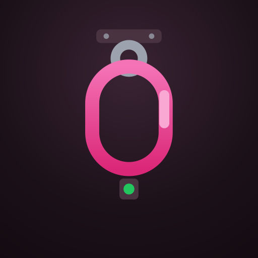
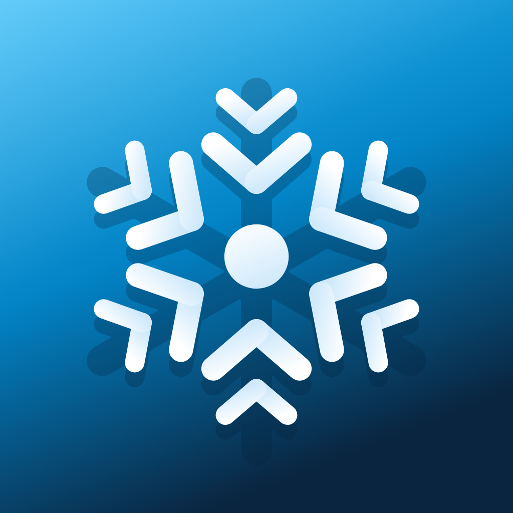
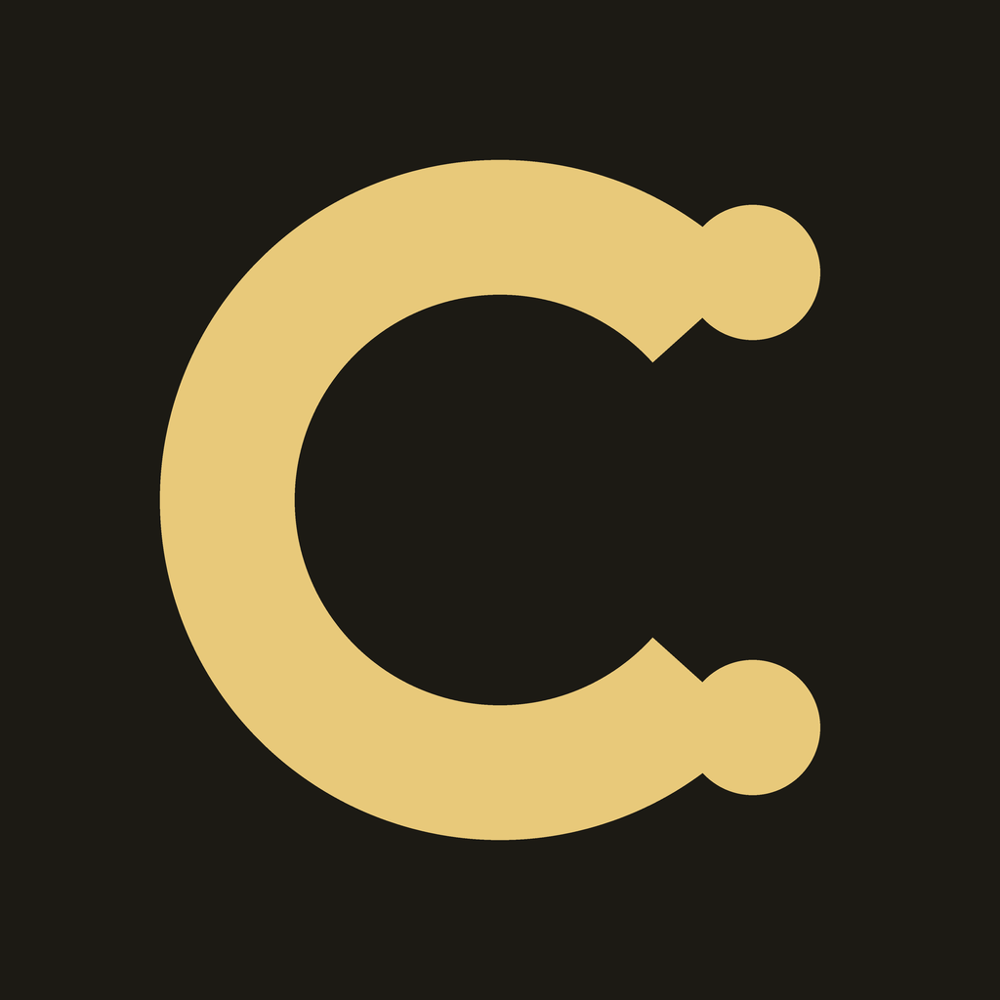

So funktioniert's
Halle, Tiefgarage, Wohnanlage — und darunter jedes Tor mit Torart, Antrieb und Baujahr. Objekte sind unbegrenzt, auch in der Free-Version.
Tor wählen, 12-Punkte-Checkliste durchgehen, Mängel per Ampel einstufen, Foto dazu — GPS und Zeitstempel ergänzt ToreDex automatisch. Auch „alles in Ordnung" ist ein Nachweis.
PDF pro Objekt und Zeitraum an Eigentümer, Geschäftsführung, Versicherung oder Berufsgenossenschaft — oder im Streitfall an den Anwalt.
Preise
Free
- 5 Tore in vollem Umfang
- Objekte unbegrenzt
- ASR-Checkliste, Ampel, GPS, Fotos
- PDF-Prüfprotokoll mit Wasserzeichen
- Cloud-Sync auf allen Geräten
Pro Empfohlen
- Unbegrenzt Tore
- Team: Mitarbeiter einladen
- PDF-Prüfprotokoll ohne Wasserzeichen
- Prüf-Erinnerung
- Priorisierter Support
Alle 15 Dexware-Apps. Ein Abo.
Die Suite kostet so viel wie unsere teuerste Einzel-App — und schaltet alle Dexware-Apps auf allen deinen Geräten frei. Neue Apps kommen automatisch dazu, ohne Aufpreis.



- Alle 15 Apps inklusive — von Torprüfung bis Winterdienst
- Alle zukünftigen Dexware-Apps automatisch dabei
- Einmal kaufen — in jeder App freigeschaltet
- Jederzeit kündbar
Erhältlich direkt in jeder Dexware-App: einfach in der App auf „Pro werden" tippen und die Dexware Suite wählen.
Mehr zur Dexware Suite →💻 Fürs Web gibt's einen Haupteinstieg: dashboard.dexware.app — die Übersicht aller App-Dashboards, auch für ToreDex.
Entdecke die ganze Dexware
ToreDex ist Teil der Dexware-Familie — Pflicht-Dokumentation, die einfach funktioniert.